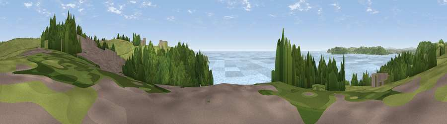

Viewpoint near Heybrook Bay
#13187 in England · top 26% of its area beats it · near Heybrook BayWhere it is
The exact computed spot (SX 49575 48975). Click the marker for map links.
The view, rendered

A 360° render of this exact spot computed from the terrain model, tree cover and land cover — summer colours, afternoon light, calibrated against photographs of famous viewpoints. Real trees, hedges and buildings will differ in detail.
The panorama
Grey silhouette: terrain skyline in each direction (720 bearings, Earth curvature and refraction included). Dashed green: skyline with trees (+15 m) and buildings (+8 m) as obstacles. Blue strip: how far the ground is visible on each bearing.
Where the view opens
Wedge length = distance to the farthest visible ground on that bearing (vegetation-aware). Rings at 10, 25 and 50 km.
What fills the view
55% water · 24% woodland · 19% grassland · 1% built-up ·
Angular shares of the visible panorama (visual magnitude), not map area. Landscape diversity 0.47 (0–1 Shannon).
Key numbers
More beautiful places nearby
The staircase of upgrades: each row has a higher view potential than everything closer. Driving times are estimates from straight-line distance, calibrated against real road routing — check an actual route before setting out.
| Place | Direction | Drive | Score |
|---|---|---|---|
| Viewpoint near Down Thomas | NNE · 1 km | ~3 min | 75.0 |
| Viewpoint near Newton Ferrers | ESE · 4 km | ~9 min | 78.2 |
| Viewpoint near Cawsand | W · 7 km | ~15 min | 81.0 |
| Viewpoint near Lee Moor | NNE · 15 km | ~27 min | 82.7 |
| Viewpoint near Downderry | WNW · 17 km | ~29 min | 83.5 |
| Viewpoint near Hope | ESE · 21 km | ~35 min | 84.4 |
| Viewpoint near East Prawle | ESE · 30 km | ~47 min | 84.6 |
| Pencarrow Head | W · 34 km | ~52 min | 86.0 |
50.32146, -4.11444 · source: screening · position refined by local search. Computed location — check access rights before visiting.